2023 Advanced Higher Biology - Paper 1 questions
Source: Scottish Qualifications Authority (SQA) / Qualifications Scotland. This is a StemInteract HTML companion, not an official HTML edition. Selectable text is supplied alongside original page images. Use the images or original PDF for equations, powers, fractions, vector notation, tables and diagrams; text extraction cannot fully preserve mathematical layout.
Jump to a question
PDF page 1
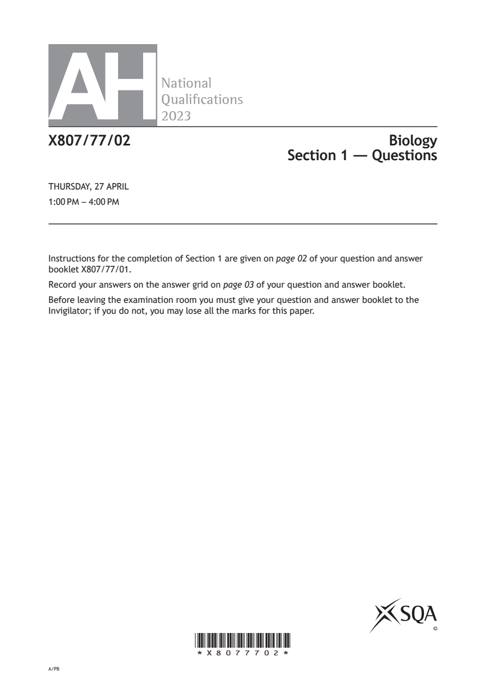
Selectable page text
AH
National
Qualications
2023
X807/77/02 Biology
Section 1 — Questions
THURSDAY, 27 APRIL
1:00 PM – 4:00 PM
Instructions for the completion of Section 1 are given on page 02 of your question and answer
booklet X807/77/01.
Record your answers on the answer grid on page 03 of your question and answer booklet.
Before leaving the examination room you must give your question and answer booklet to the
Invigilator; if you do not, you may lose all the marks for this paper.
©
*X8077702*
A/PBPDF page 2
Paper 1, Question 1Paper 1, Question 2Paper 1, Question 3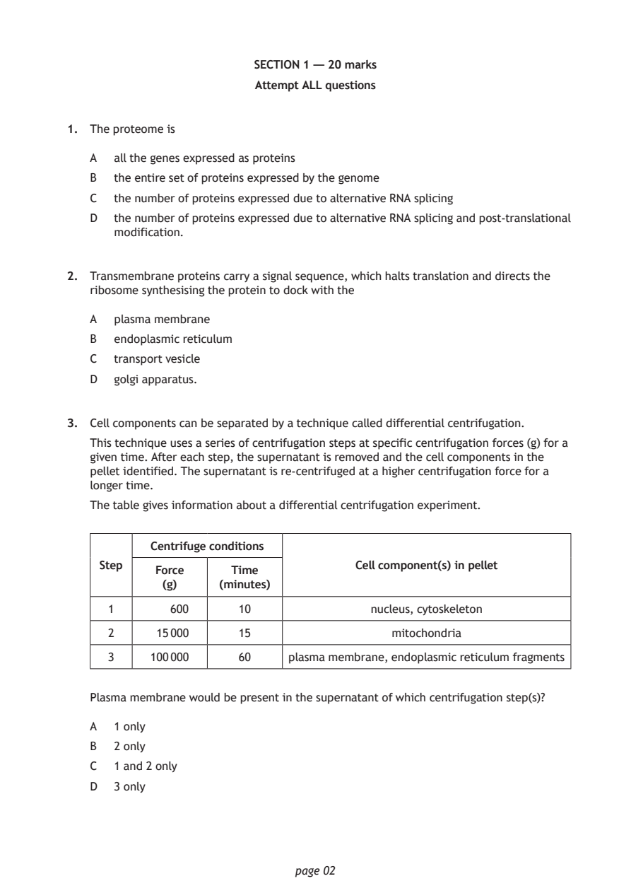
Selectable page text
SECTION 1 — 20 marks
Attempt ALL questions
1. The proteome is
A all the genes expressed as proteins
B the entire set of proteins expressed by the genome
C the number of proteins expressed due to alternative RNA splicing
D the number of proteins expressed due to alternative RNA splicing and post‑translational
modification.
2. Transmembrane proteins carry a signal sequence, which halts translation and directs the
ribosome synthesising the protein to dock with the
A plasma membrane
B endoplasmic reticulum
C transport vesicle
D golgi apparatus.
3. Cell components can be separated by a technique called differential centrifugation.
This technique uses a series of centrifugation steps at specific centrifugation forces (g) for a
given time. After each step, the supernatant is removed and the cell components in the
pellet identified. The supernatant is re‑centrifuged at a higher centrifugation force for a
longer time.
The table gives information about a differential centrifugation experiment.
Centrifuge conditions
Step Cell component(s) in pellet
Force Time
(g) (minutes)
1 600 10 nucleus, cytoskeleton
2 15 000 15 mitochondria
3 100 000 60 plasma membrane, endoplasmic reticulum fragments
Plasma membrane would be present in the supernatant of which centrifugation step(s)?
A 1 only
B 2 only
C 1 and 2 only
D 3 only
page 02PDF page 3
Paper 1, Question 4Paper 1, Question 5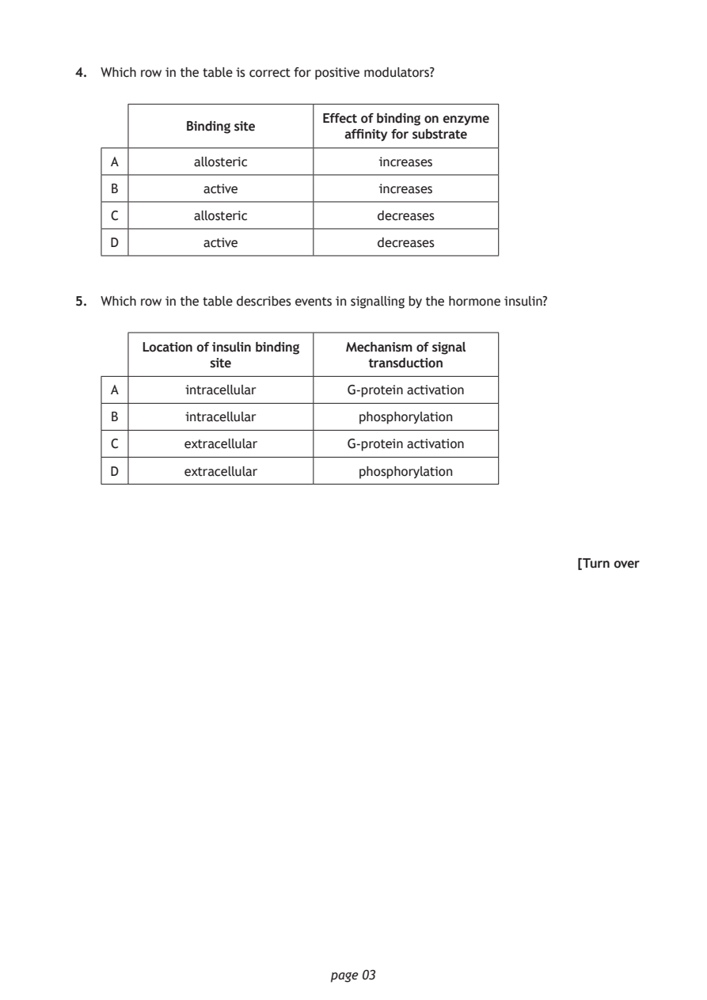
Selectable page text
4. Which row in the table is correct for positive modulators?
Effect of binding on enzyme
Binding site
affinity for substrate
A allosteric increases
B active increases
C allosteric decreases
D active decreases
5. Which row in the table describes events in signalling by the hormone insulin?
Location of insulin binding Mechanism of signal
site transduction
A intracellular G‑protein activation
B intracellular phosphorylation
C extracellular G‑protein activation
D extracellular phosphorylation
[Turn over
page 03PDF page 4
Paper 1, Question 6Paper 1, Question 7Paper 1, Question 8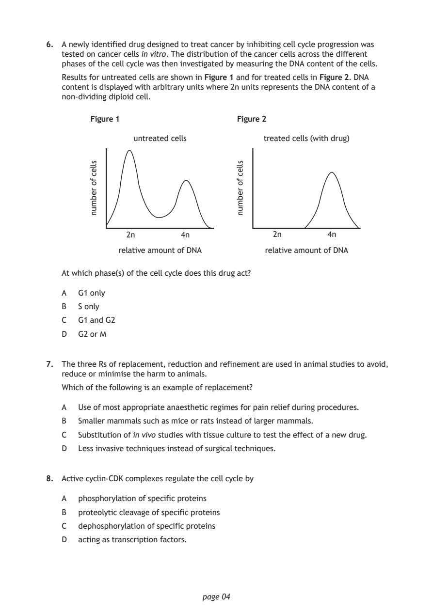
Selectable page text
6. A newly identified drug designed to treat cancer by inhibiting cell cycle progression was
tested on cancer cells in vitro. The distribution of the cancer cells across the different
phases of the cell cycle was then investigated by measuring the DNA content of the cells.
Results for untreated cells are shown in Figure 1 and for treated cells in Figure 2. DNA
content is displayed with arbitrary units where 2n units represents the DNA content of a
non‑dividing diploid cell.
Figure 1 Figure 2
untreated cells treated cells (with drug)
relative amount of DNA relative amount of DNA
page 04
sllec
fo
rebmun
sllec
fo
rebmun
2n 4n 2n 4n
At which phase(s) of the cell cycle does this drug act?
A G1 only
B S only
C G1 and G2
D G2 or M
7. The three Rs of replacement, reduction and refinement are used in animal studies to avoid,
reduce or minimise the harm to animals.
Which of the following is an example of replacement?
A Use of most appropriate anaesthetic regimes for pain relief during procedures.
B Smaller mammals such as mice or rats instead of larger mammals.
C Substitution of in vivo studies with tissue culture to test the effect of a new drug.
D Less invasive techniques instead of surgical techniques.
8. Active cyclin‑CDK complexes regulate the cell cycle by
A phosphorylation of specific proteins
B proteolytic cleavage of specific proteins
C dephosphorylation of specific proteins
D acting as transcription factors.PDF page 5
Paper 1, Question 9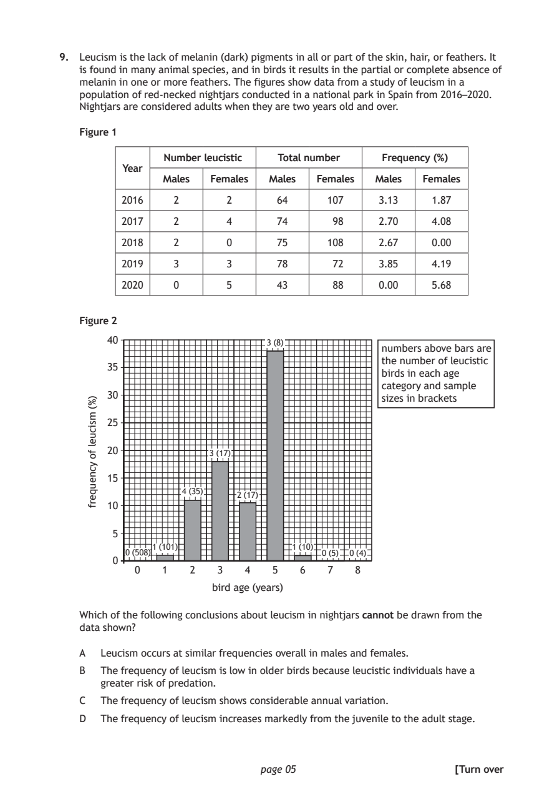
Selectable page text
9. Leucism is the lack of melanin (dark) pigments in all or part of the skin, hair, or feathers. It
is found in many animal species, and in birds it results in the partial or complete absence of
melanin in one or more feathers. The figures show data from a study of leucism in a
population of red‑necked nightjars conducted in a national park in Spain from 2016–2020.
Nightjars are considered adults when they are two years old and over.
Figure 1
Number leucistic Total number Frequency (%)
Year
Males Females Males Females Males Females
2016 2 2 64 107 3.13 1.87
2017 2 4 74 98 2.70 4.08
2018 2 0 75 108 2.67 0.00
2019 3 3 78 72 3.85 4.19
2020 0 5 43 88 0.00 5.68
Figure 2
numbers above bars are
the number of leucistic
birds in each age
category and sample
sizes in brackets
bird age (years)
page 05
)%(
msicuel
fo
ycneuqerf
40
3 (8)
35
30
25
20
3 (17)
15
4 (35)
2 (17)
10
5
1 (101) 1 (10)
508) 0 (5) 0 (4)
0 ⁰⁽
0 1 2 3 4 5 6 7 8
Which of the following conclusions about leucism in nightjars cannot be drawn from the
data shown?
A Leucism occurs at similar frequencies overall in males and females.
B The frequency of leucism is low in older birds because leucistic individuals have a
greater risk of predation.
C The frequency of leucism shows considerable annual variation.
D The frequency of leucism increases markedly from the juvenile to the adult stage.
[Turn overPDF page 6
Paper 1, Question 10Paper 1, Question 11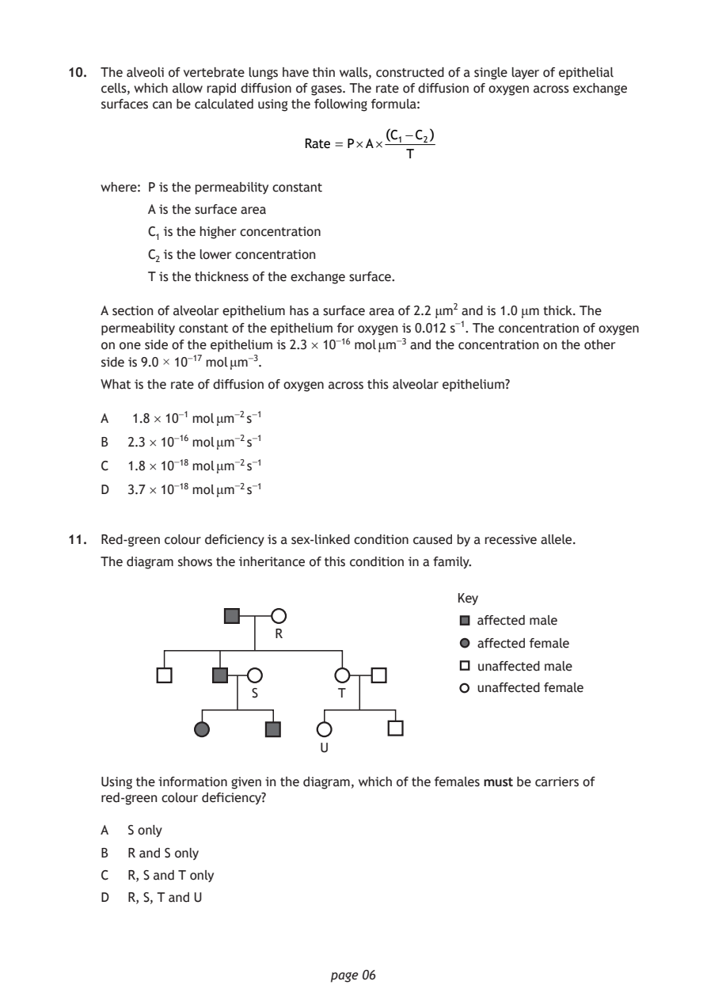
Selectable page text
10. The alveoli of vertebrate lungs have thin walls, constructed of a single layer of epithelial
cells, which allow rapid diffusion of gases. The rate of diffusion of oxygen across exchange
surfaces can be calculated using the following formula:
(C₁−C₂)
Rate = P×A×
T
where: P is the permeability constant
A is the surface area
C₁ is the higher concentration
C₂ is the lower concentration
T is the thickness of the exchange surface.
A section of alveolar epithelium has a surface area of 2.2 μm² and is 1.0 μm thick. The
permeability constant of the epithelium for oxygen is 0.012 s⁻¹. The concentration of oxygen
on one side of the epithelium is 2.3 × 10⁻¹⁶ mol μm⁻³ and the concentration on the other
side is 9.0 × 10⁻¹⁷ mol μm⁻³.
What is the rate of diffusion of oxygen across this alveolar epithelium?
A 1.8 × 10⁻¹ mol μm⁻² s⁻¹
B 2.3 × 10⁻¹⁶ mol μm⁻² s⁻¹
C 1.8 × 10⁻¹⁸ mol μm⁻² s⁻¹
D 3.7 × 10⁻¹⁸ mol μm⁻² s⁻¹
11. Red‑green colour deficiency is a sex‑linked condition caused by a recessive allele.
The diagram shows the inheritance of this condition in a family.
Key
affected male
R
affected female
unaffected male
unaffected female
S T
U
Using the information given in the diagram, which of the females must be carriers of
red‑green colour deficiency?
A S only
B R and S only
C R, S and T only
D R, S, T and U
page 06PDF page 7
Paper 1, Question 12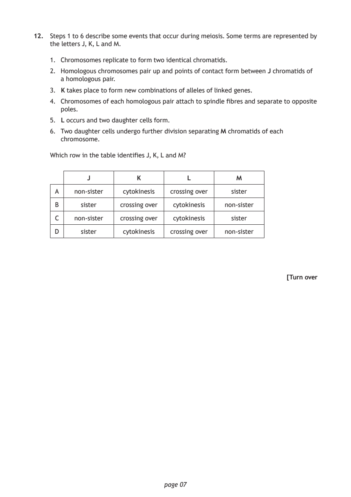
Selectable page text
12. Steps 1 to 6 describe some events that occur during meiosis. Some terms are represented by
the letters J, K, L and M.
1. Chromosomes replicate to form two identical chromatids.
2. Homologous chromosomes pair up and points of contact form between J chromatids of
a homologous pair.
3. K takes place to form new combinations of alleles of linked genes.
4. Chromosomes of each homologous pair attach to spindle fibres and separate to opposite
poles.
5. L occurs and two daughter cells form.
6. Two daughter cells undergo further division separating M chromatids of each
chromosome.
Which row in the table identifies J, K, L and M?
J K L M
A non‑sister cytokinesis crossing over sister
B sister crossing over cytokinesis non‑sister
C non‑sister crossing over cytokinesis sister
D sister cytokinesis crossing over non‑sister
[Turn over
page 07PDF page 8
Paper 1, Question 13Paper 1, Question 14Paper 1, Question 15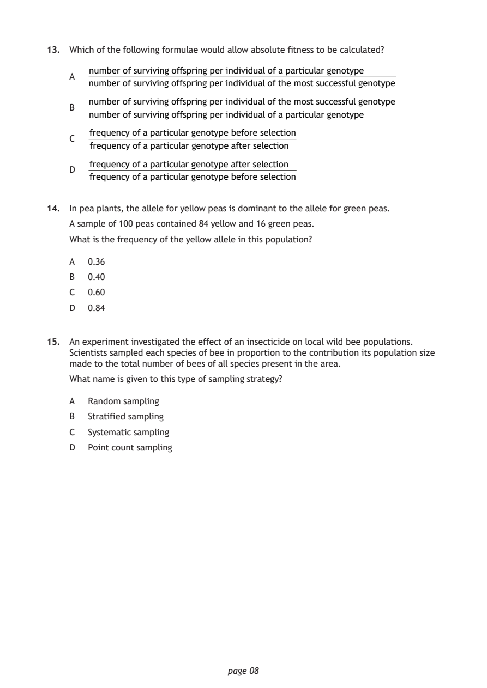
Selectable page text
13. Which of the following formulae would allow absolute fitness to be calculated?
number of surviving offspring per individual of a particular genotype
A
number of surviving offspring per individual of the most successful genotype
number of surviving offspring per individual of the most successful genotype
B
number of surviving offspring per individual of a particular genotype
frequency of a particular genotype before selection
C
frequency of a particular genotype after selection
frequency of a particular genotype after selection
D
frequency of a particular genotype before selection
14. In pea plants, the allele for yellow peas is dominant to the allele for green peas.
A sample of 100 peas contained 84 yellow and 16 green peas.
What is the frequency of the yellow allele in this population?
A 0.36
B 0.40
C 0.60
D 0.84
15. An experiment investigated the effect of an insecticide on local wild bee populations.
Scientists sampled each species of bee in proportion to the contribution its population size
made to the total number of bees of all species present in the area.
What name is given to this type of sampling strategy?
A Random sampling
B Stratified sampling
C Systematic sampling
D Point count sampling
page 08PDF page 9
Paper 1, Question 16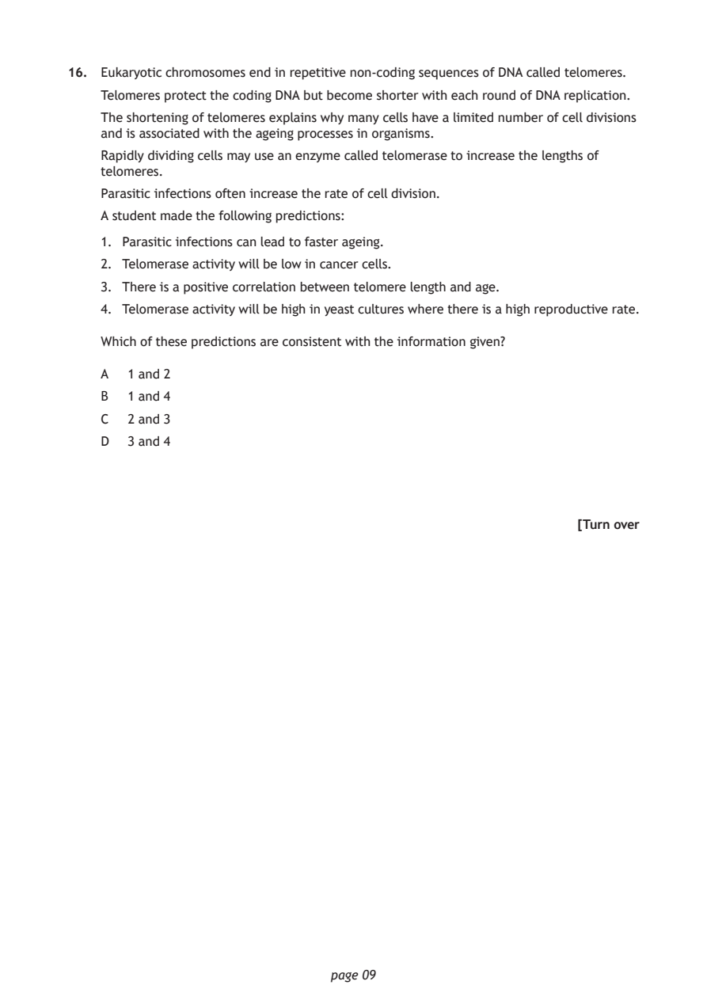
Selectable page text
16. Eukaryotic chromosomes end in repetitive non‑coding sequences of DNA called telomeres.
Telomeres protect the coding DNA but become shorter with each round of DNA replication.
The shortening of telomeres explains why many cells have a limited number of cell divisions
and is associated with the ageing processes in organisms.
Rapidly dividing cells may use an enzyme called telomerase to increase the lengths of
telomeres.
Parasitic infections often increase the rate of cell division.
A student made the following predictions:
1. Parasitic infections can lead to faster ageing.
2. Telomerase activity will be low in cancer cells.
3. There is a positive correlation between telomere length and age.
4. Telomerase activity will be high in yeast cultures where there is a high reproductive rate.
Which of these predictions are consistent with the information given?
A 1 and 2
B 1 and 4
C 2 and 3
D 3 and 4
[Turn over
page 09PDF page 10
Paper 1, Question 17Paper 1, Question 18Paper 1, Question 19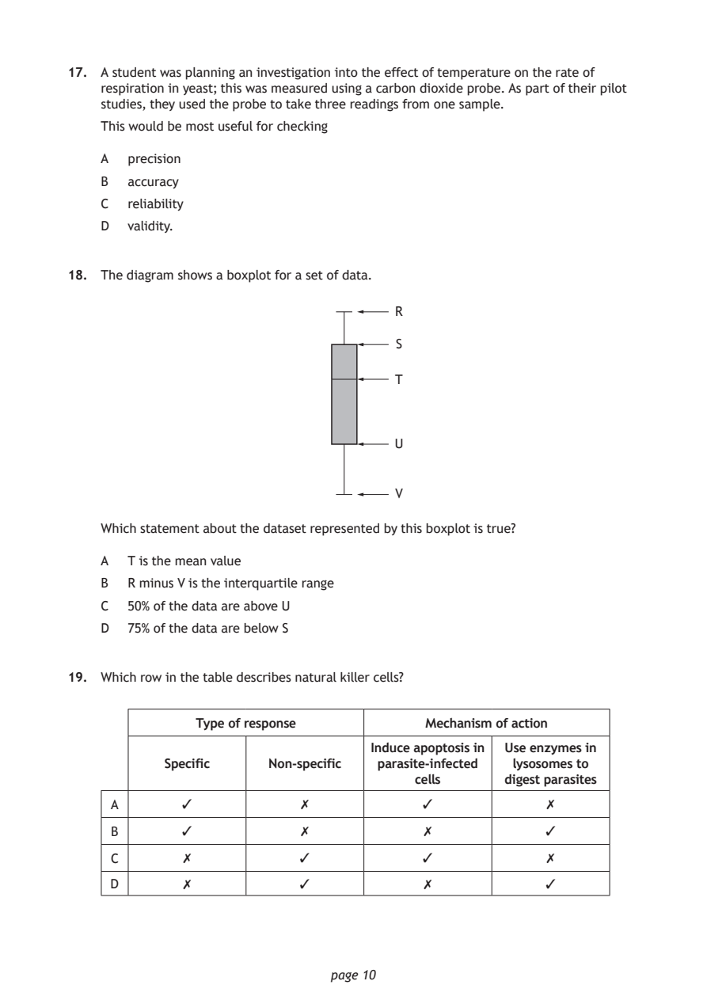
Selectable page text
17. A student was planning an investigation into the effect of temperature on the rate of
respiration in yeast; this was measured using a carbon dioxide probe. As part of their pilot
studies, they used the probe to take three readings from one sample.
This would be most useful for checking
A precision
B accuracy
C reliability
D validity.
18. The diagram shows a boxplot for a set of data.
R
S
T
U
V
Which statement about the dataset represented by this boxplot is true?
A T is the mean value
B R minus V is the interquartile range
C 50% of the data are above U
D 75% of the data are below S
19. Which row in the table describes natural killer cells?
Type of response Mechanism of action
Induce apoptosis in Use enzymes in
Specific Non‑specific parasite‑infected lysosomes to
cells digest parasites
A ✓ ✗ ✓ ✗
B ✓ ✗ ✗ ✓
C ✗ ✓ ✓ ✗
D ✗ ✓ ✗ ✓
page 10PDF page 11
Paper 1, Question 20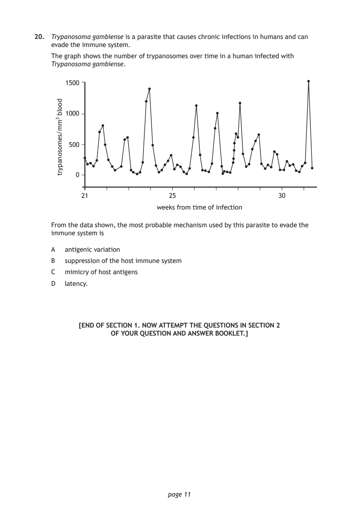
Selectable page text
20. Trypanosoma gambiense is a parasite that causes chronic infections in humans and can
evade the immune system.
The graph shows the number of trypanosomes over time in a human infected with
Trypanosoma gambiense.
weeks from time of infection
page 11
doolb
3mm/semosonapyrt
1500
1000
500
0
21 25 30
From the data shown, the most probable mechanism used by this parasite to evade the
immune system is
A antigenic variation
B suppression of the host immune system
C mimicry of host antigens
D latency.
[END OF SECTION 1. NOW ATTEMPT THE QUESTIONS IN SECTION 2
OF YOUR QUESTION AND ANSWER BOOKLET.]PDF page 12

Selectable page text
[BLANK PAGE]
DO NOT WRITE ON THIS PAGE
page 12